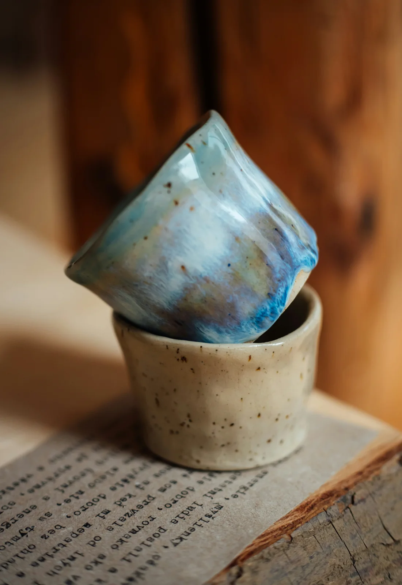
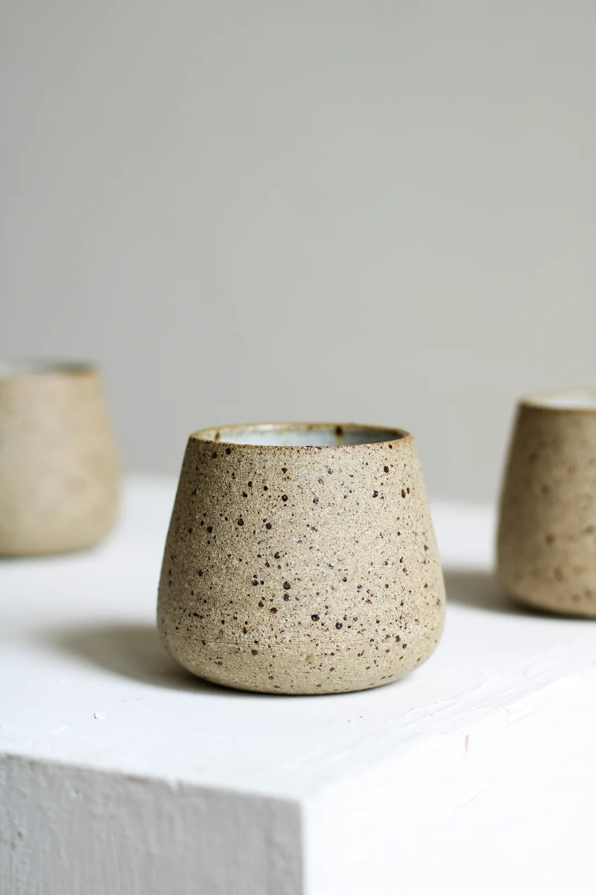
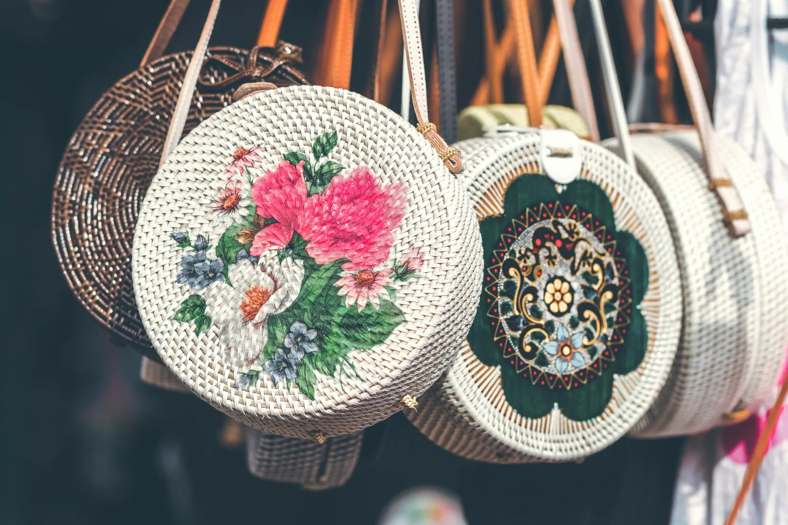
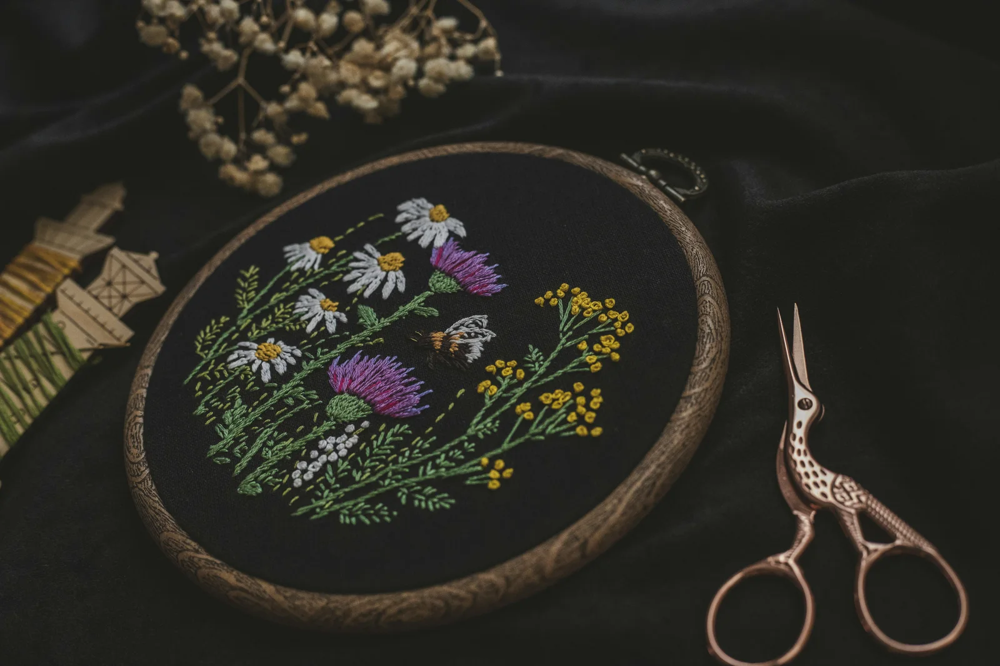
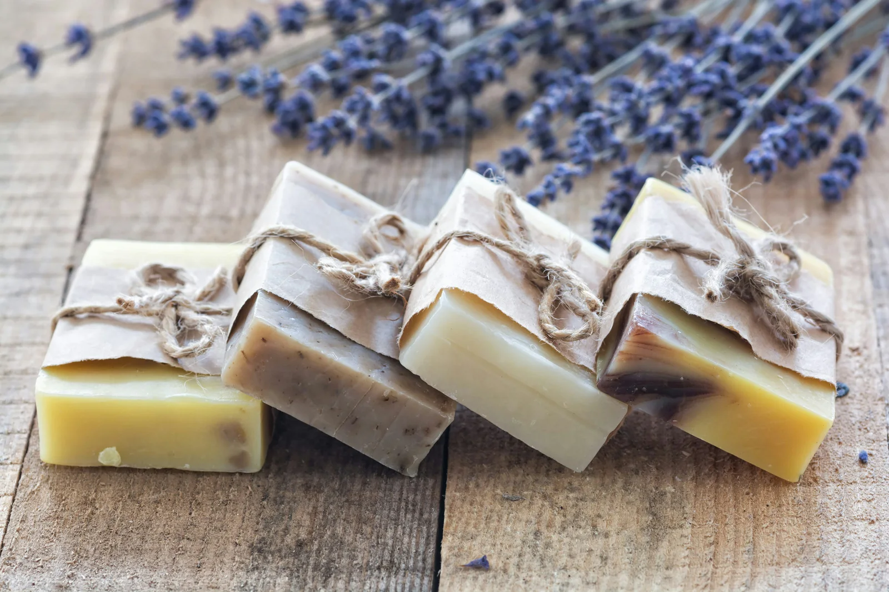
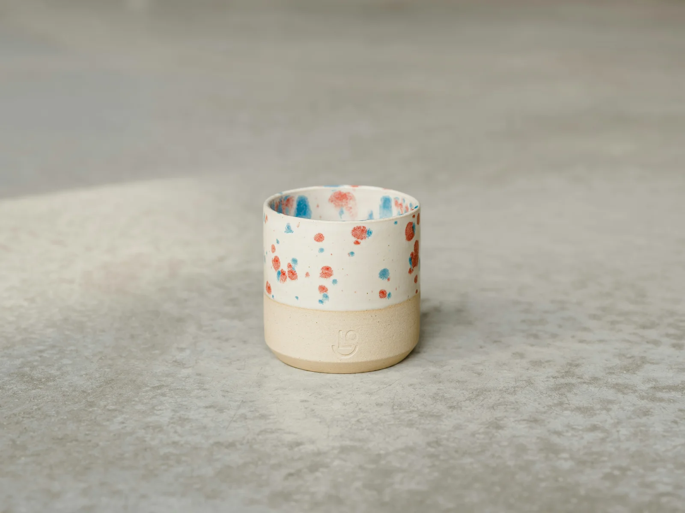
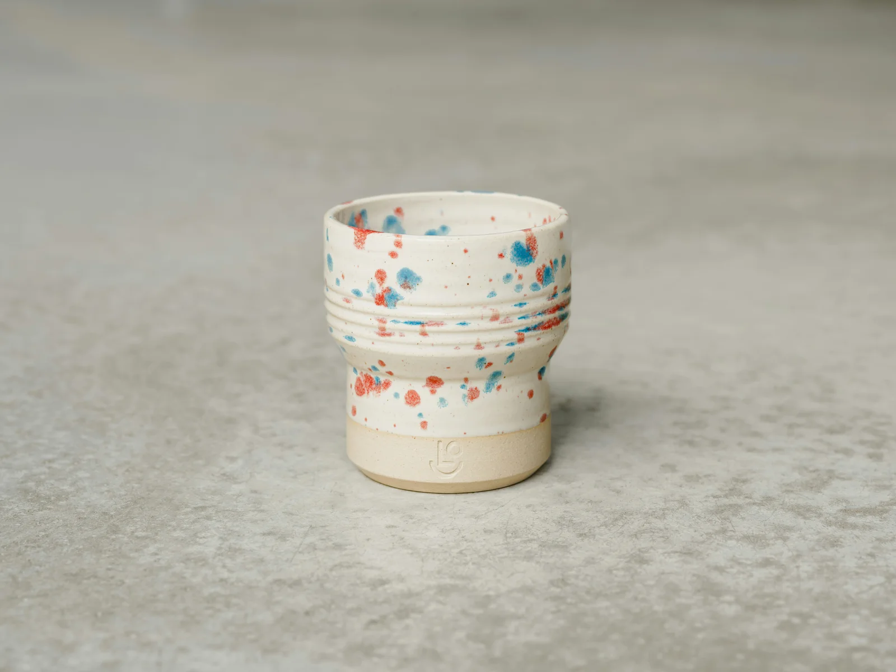
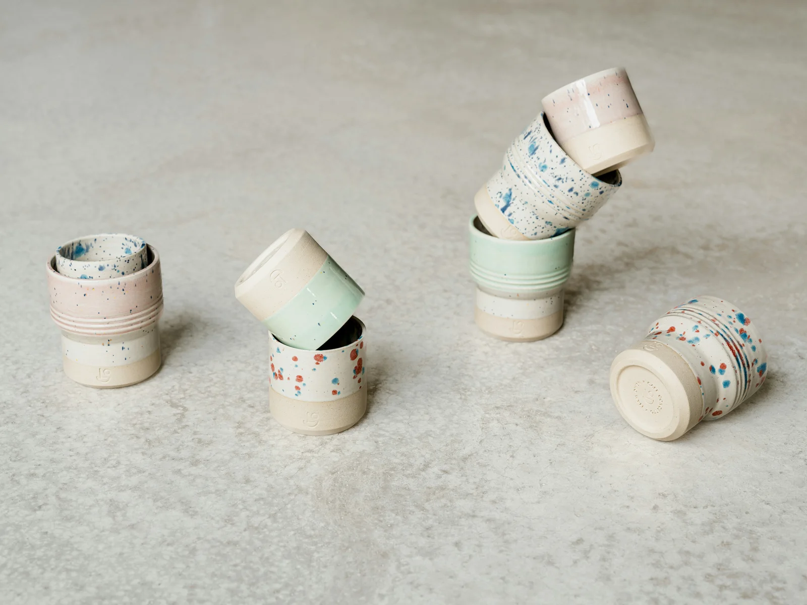
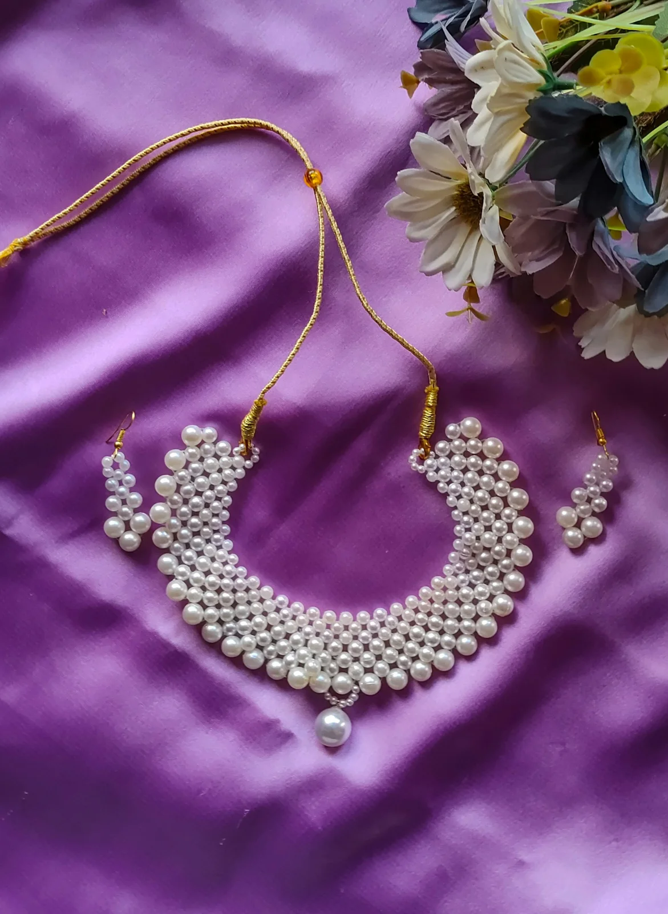
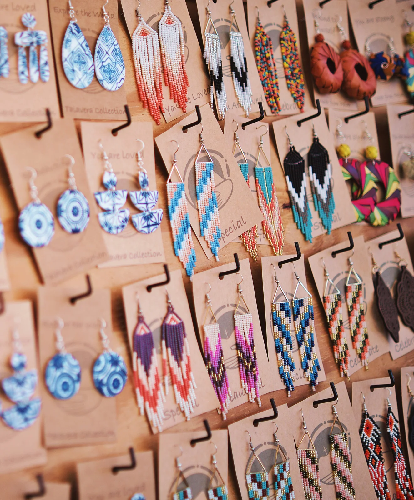

Tidepool Cup Pair
120 AED
DISCOVERY GARDENS · EVERY SATURDAY
An in-person artisan marketplace in Discovery Gardens, Dubai, every Saturday. Meet the makers, discover handmade treasures and shop directly at their stalls.




THE COLLECTION
Find a little something for your home, your everyday, or someone you love.

120 AED
75 AED

80 AED

85 AED

OBJECTS WITH A LITTLE SOUL
The cup you reach for every morning. A pair of earrings that starts a conversation. A bag that goes everywhere with you.
Loom & Kiln is a Saturday gathering for craft and community in Discovery Gardens. Come for the ceramics, jewellery, woven bags, embroidery and soaps. Stay for the conversations with the people who make them.
Find your everyday favouriteTHE PEOPLE BEHIND THE PIECES
Six imagined studios. Six different ways to see the everyday.
Ceramics
Soft colour. Organic shapes. A slower coffee moment.

Jewellery
Expressive pieces for ordinary days and special evenings.
Embroidery
Small botanical worlds, one stitch at a time.

Jewellery
A playful conversation between texture, shape and colour.
Woven bags
Natural textures and joyful details, ready to go with you.
Soaps
Simple gift-ready forms with a botanical mood.
DISCOVERY GARDENS, DUBAI · EVERY SATURDAY
Join our in-person artisan marketplace in Discovery Gardens, Dubai, every Saturday.
Browse the stalls, see the pieces up close and hear the stories behind them.
Choose your favourites and buy directly from the artisans in person.
GOOD TO KNOW
The artisan marketplace takes place in Discovery Gardens, Dubai, every Saturday. Shopping happens in person at the market.
The studio names, product names and prices are imagined for this concept. Photography is supplied from Unsplash; the images do not represent partnerships with the named studios.
The collection describes what is visible in the photographs. Exact materials, dimensions, ingredients and care instructions would be confirmed by a real maker at their stall before a purchase.
Select “Explore the studio” on a maker card to see that studio’s pieces. Choose “All” in the collection to return to the complete edit.
FOR THE HOME. FOR THE EVERYDAY. FOR SOMEONE YOU LOVE.
Discovery Gardens, Dubai · Every Saturday
Visit the market